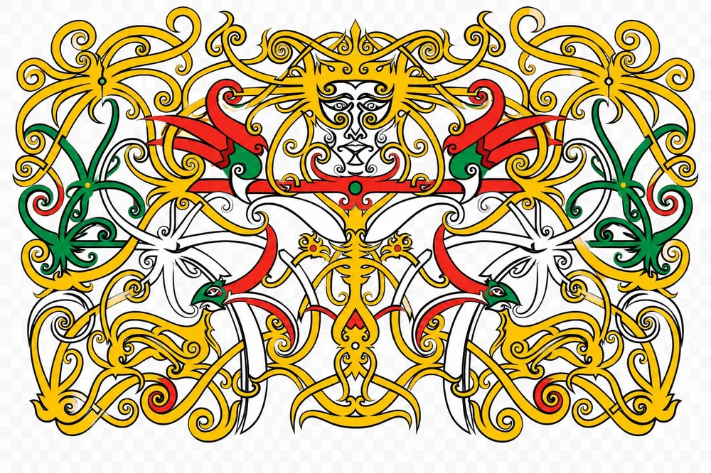
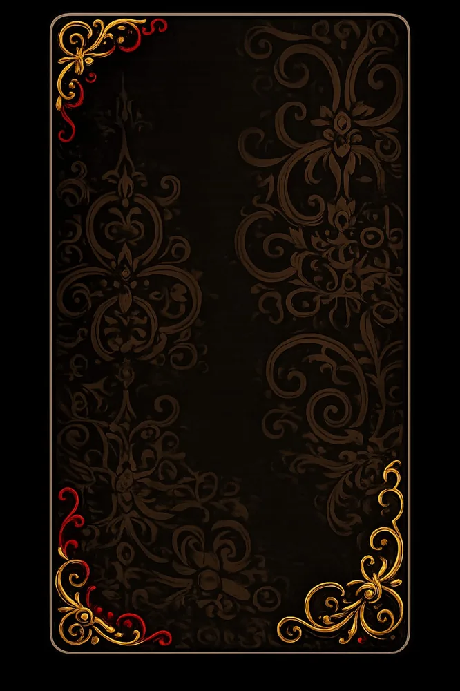
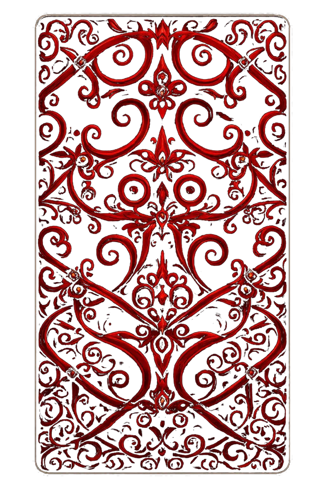

The Holy Matrimony Of
Effrem
Eka

Dengan penuh puji syukur atas karunia Tuhan, kami memohon doa restu Bapak/Ibu/Saudara/i pada pernikahan putra-putri kami:

Effrem Panesidi, A.Md.Gz
Anak Keenam dari
Bpk. Lambertus (Alm) & Ibu Elisabet

Konstansia Eka, S.M
Anak Kedua dari
Bpk. Simon Tete & Ibu Petronela Suriati
Kisah Cinta & Momen Kami
“Segala sesuatu indah pada waktunya.”
Perjalanan Kasih
Setiap kisah cinta selalu memiliki awal yang indah. Begitu pula kisah Effrem dan Eka.

Menuju Hari Bahagia
Misa & Sakramen
Sabtu, 25 Juli 2026
11.00 WIB – selesai
Gereja Katolik Paroki Santo Petrus & Paulus, Menjalin
Jl. Anjungan - Bengkayang, Raba, Kec. Menjalin, Kabupaten Landak, Kalimantan Barat 79362
Scan Lokasi

Resepsi
Sabtu, 25 Juli 2026
13.00 WIB – selesai
Kediaman Keluarga Bpk. Lambertus/Ibu Elisabet
Dusun Sei Bandung, Desa Menjalin, Kecamatan Menjalin, Kabupaten Landak, Kalimantan Barat
Scan Lokasi


Konfirmasi Kehadiran
Mohon kesediaan Anda mengisi form kehadiran di bawah ini.
Wedding Gift
Doa restu Anda adalah karunia terindah. Namun jika Anda ingin memberikan tanda kasih, dapat melalui:
1460023861649
a.n Effrem Panesidi (Bank Mandiri)
482001015896539
a.n Konstansia Eka (Bank BRI)
Buku Ucapan & Doa
Terima Kasih
Atas doa restu dan kehadiran Bapak/Ibu/Saudara/i dalam perayaan cinta kami.
“Semoga Allah damai sejahtera menguduskan kamu seluruhnya dan semoga roh, jiwa dan tubuhmu terpelihara sempurna dengan tak bercacat pada kedatangan Yesus Kristus, Tuhan kita.” (1 Tes 5:23)
Kami yang berbahagia,
Effrem & Eka
Designed & Developed by